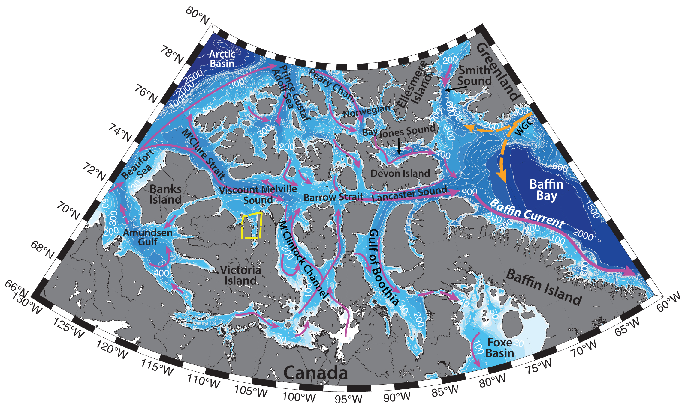

Schematic water circulation patterns and geographical place names in the Hadley Bay region. Adopted from Bailey (1957), Michel et al. (2006), Peterson et al. (2012). Dashed yellow line marks the studied region.
Hadley Bay is a bay in the northern Victoria Island in the Canadian Arctic Archipelago (CAA), located in the western Viscount Melville Sound. The Canadian Arctic Archipelago occupies the vast Canadian shelf and incorporates many narrow channels, dividing various basins and separated by sills (e.g. Michel et al., 2006). Hydrography of the CAA is determined by the complex topography, sea ice, freshwater and ice runoff from the archipelago glaciers, steric effects, atmospheric forcing, freshwater transport through the archipelago, various polynyas, strong tides and the exchange between the shelf and deep Arctic Basin.
In the Canadian Arctic Archipelago, sea ice is found all year round, and is generally land-fast due to the narrow width of the channels. Minimum ice cover is observed in September, freeze-up – in late December. The area of the Viscount Melville Sound and Hadley Bay used to be ice-covered almost constantly (e.g. Michel et al., 2006), however due to Arctic warming it can be not the case anymore.
Various polynyas are known to exist in the Canadian Arctic Archipelago (e.g. Topham et al., 1983), for example, the closest to the studied region are Viscount-Melville Sound polynya and the shorelead polynya along the western edge of the CAA in the Beaufort Sea (Hannah et al., 2009). Polynyas are very sensitive to the air temperatures – for example, Topham with coauthors (1983) argue, that the air temperature in early February is a critical factor in determining whether or not a sizeable area of open water persists throughout the year. Polynyas play an important role in the life of the Arctic, due to upwelling of nutrients, increased light availability, high productivity and sedimentation rates, etc., providing feeding grounds for a variety of marine life (e.g. Topham et al., 1983; Michel et al., 2006). Local cold and dense water can be formed in the polynyas due to cooling and salinization via ice formation. Phytoplankton blooms are commonly observed at the ice edge. Though they are generally short-lived, they have a substantial impact on the ecosystem, providing food for the benthic communities in the region (Seidenkrantz, M.-S., 2013).
Canadian Arctic Archipelago is one of the dominant pathways of surface outflow from the Arctic Ocean to the Atlantic (the other one being through Fram Strait), due to steric differences. The outflow of surface water through the CAA is fresher, compared to the outflow through Fram Strait. The majority of the CAA freshwater flux is in liquid form (>95 %), since much of the year the ice within the CAA is land-fast. Due to remote location, complicated topography, harsh winter conditions and narrow buoyancy driven boundary currents, the actual flow rates through the archipelago are difficult to obtain (see the figure for the schematic circulation; e.g. Michel et al., 2006).
Tang with coauthors (2004) have described, that the strength of the currents varies both spatially and seasonally from region to region. Overall, currents tend to be stronger during summer and fall at all depths, compared to winter and spring. Such structure can be explained by either seasonal variations of inflows from the northern straits, or larger transports of the Labrador Sea gyre in fall and winter.
The limited available data from the CAA show that the volume, freshwater and heat fluxes through the CAA channels (as well as temperature, salinity, velocity fields) also vary greatly both seasonally and interannually. Fluxes are small in fall/winter and reach their maximum in late summer. Estimates range from 0.7 to 2.5 Sv of southward volume flux (Prinsenberg, Hamilton, 2005). Michel with coauthors (2006) describe, that while over the past 30 years there are decreasing sea ice cover trends in the Arctic, and the associated increase in the inflow of Atlantic water to the Arctic, various research suggests that during the cyclonic circulation mode over the area of the Arctic High and Beaufort Gyre, there is more export of Pacific water through the Canadian Arctic Archipelago (e.g. Peterson et al., 2012).
The general transport through the M’Clure Strait and Viscount Melville Sound (and subsequently through the CAA) is known to be eastwards, driven mainly by the sea level difference along the Northwest Passage (e.g. Peterson et al., 2012).
Water column in the region is comprised of the water masses of Arctic, Pacific and Atlantic origin, mainly advected from the Beaufort Sea (e.g. Bailey, 1957; Michel et al., 2006). The 200 m upper layer appears to be composed of the three water masses: a seasonal mixed layer, Pacific-origin summer water and Pacific-origin winter water (Michel et al., 2006). Surface layer can have wide range of temperatures (T can reach 5 – 6 ºC) and salinities (S > 34), amongst other factors caused by the melting and freezing of the extensive ice cover, but nevertheless this layer is generally rather cold and fresh (-1.8<T<0ºC, S from <31 up to 34.4; Muench, 1970; Bailey, 1957), with observed thickness from 20 to 75 m. Pacific-origin waters are often traced by the higher nutrient concentrations. Atlantic-origin waters (0<T<2ºC, 34.2<S<34.5) reside below, identifiable by temperatures increasing with depth and by a change of slope in salinity profiles (e.g. Michel et al., 2006). During their transit through the Archipelago, water masses undergo mixing and geochemical modification, e.g. the base of the seasonal mixed layer becomes progressively shallower, colder and more saline as it moves east from the Arctic Ocean to Barrow Strait. From M’Clure to Barrow Strait the nutrient maximum is ~50 m shallower than in the open water of the Canada Basin and occurs at progressively higher salinities as a result of turbulent mixing (e.g. Michel et al., 2006). Freshwater runoff (in liquid and ice form) from the Victoria Island can contribute to the waters of the Hadley Bay.
Strong tidal currents (predominantly semi-diurnal), arriving in the CAA mainly from the Atlantic Ocean, largely influence hydrography of the area, e.g. they enhance mixing in the region (e.g. during spring tides in Barrow Strait area), or contribute to opening of polynyas, by causing upwellings of warmer and more saline water from below 50 m depth to the surface across shallow sills (e.g. Topham et al., 1983, Michel et al., 2006, Hannah et al., 2009). In the vicinity of Barrow Strait, they can reach 50–150 cm/s. Numerical modelling report maximum tidal currents (M2, S2, K1, and O1 constituents) to be typically 0.2– 0.4 m/s in amplitudes (e.g. Michel et al., 2006).